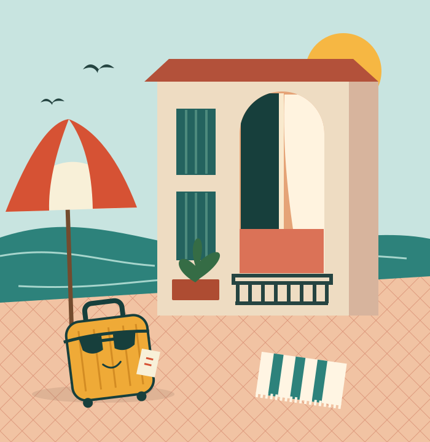

Barcelona
Culture. Coffee. Repeat.
An ambitious itinerary: see something beautiful, sit down, discuss how much walking that was. Your step counter can write the annual report.
ON THE REAL MERCA STAY SITE
Barcelona Bruc · Barcelona Gran Via
Professionally hosted. Ridiculously overthought.
A tribute to Marc Mercadé and Merca Stay Apartments. And the radical idea that your laptop might enjoy some time alone.
Watch our extremely important film60 seconds. One suitcase. No quarterly targets.

Actual destinations. Extremely unofficial travel philosophy.
Culture. Coffee. Repeat.
An ambitious itinerary: see something beautiful, sit down, discuss how much walking that was. Your step counter can write the annual report.
ON THE REAL MERCA STAY SITE
Barcelona Bruc · Barcelona Gran Via
Put “sea” in your calendar.
A very blue excuse to stop refreshing your inbox. If anyone asks, you're exploring a new direction. Horizontally.
ON THE REAL MERCA STAY SITE
Poble Sec · Balmins · 2 de mayo · Bonaventura
“The sun handles lighting. The suitcase handles logistics. A cushion has been appointed Head of Strategic Inactivity.”
Our entirely fictional organisation. There was going to be a board meeting. Everyone went outside.
Sixty seconds. One suitcase.
Absolutely no quarterly targets.
A music-only animated tribute with written jokes. No speech. The full text and visual descriptions are below.
For the colleague who thinks “on holiday” is a calendar suggestion.
The suitcase has unpacked. Your only outstanding task is deciding whether “five more minutes” starts now or in five minutes.
“I'm in an important meeting with a very small coffee.”
Entirely made up. Absolutely no email sent.
Here is where the jokes end
and the real information starts.
Merca Stay's website lists the Barcelona and Sitges apartments above. Marc Mercadé Soler is publicly associated with Merca Stay. Apartment details and reservations belong on the official website.
Real apartments. All this nonsense is ours.